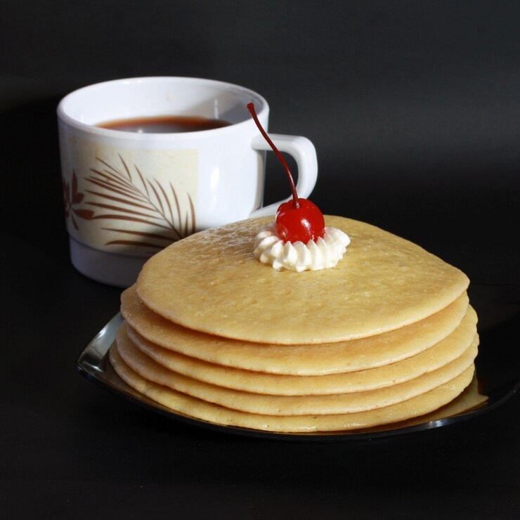

Ingredients
- 1 cup flour
- 2 tablespoons sugar
- 1 teaspoon baking powder
- 1/2 teaspoon salt
- 1 cup milk
- 1 egg
- 2 tablespoons melted butter
Instructions
- Mix all dry ingredients together.
- Whisk in milk, egg, and melted butter.
- Heat a pan over medium heat.
- Pour batter and cook until bubbles form. Flip and cook the other side.
- Serve hot with syrup or fruits!
“Cooking is like love. It should be entered into with abandon or not at all.”
— Harriet Van Horne
Source
